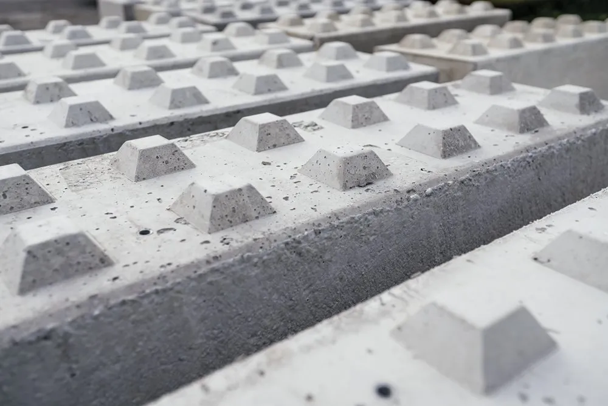
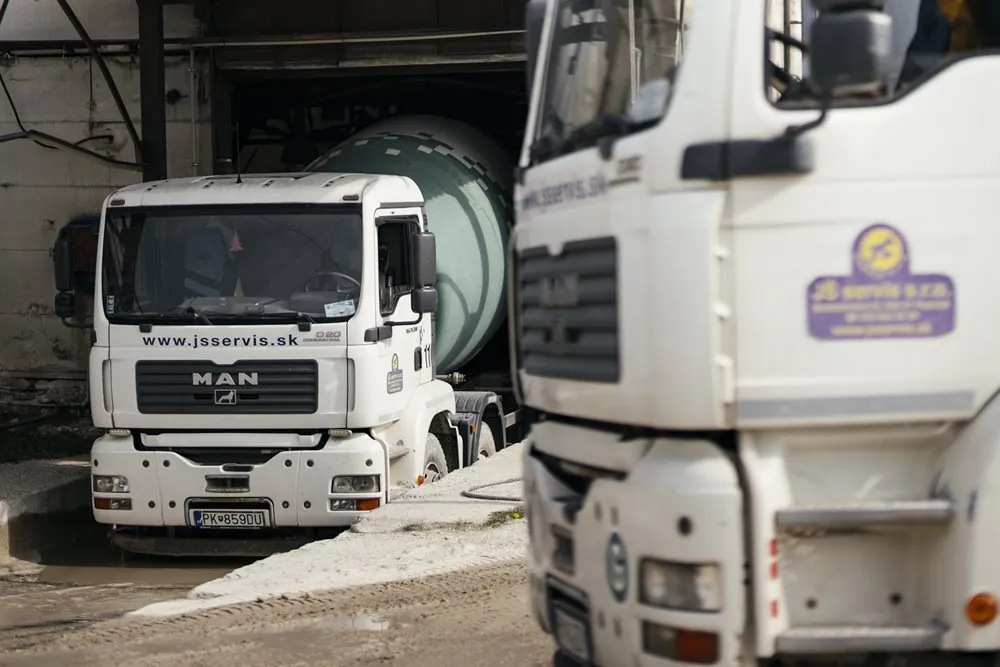
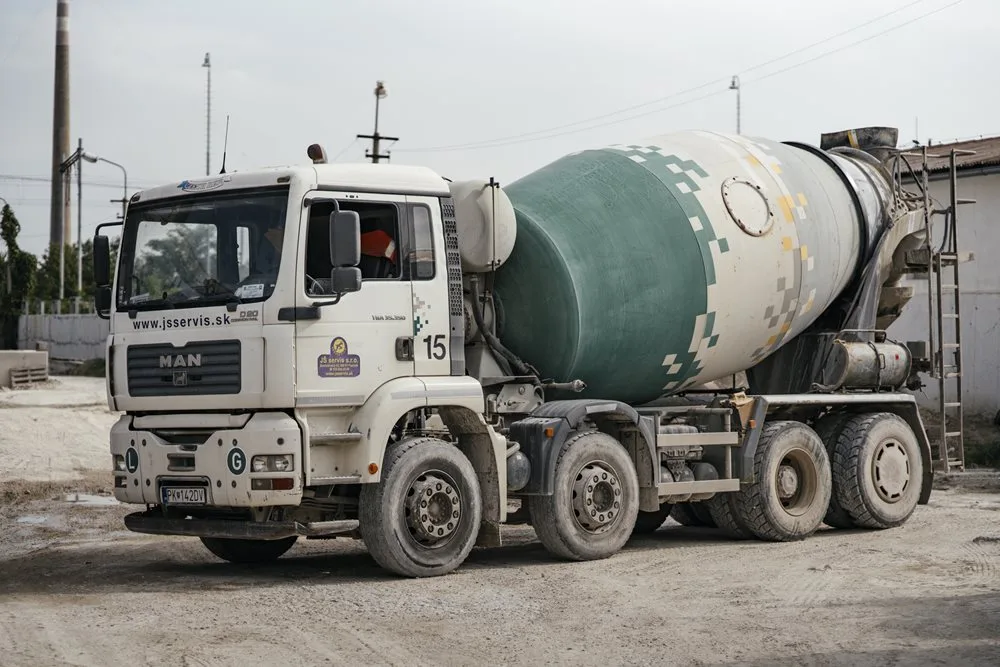
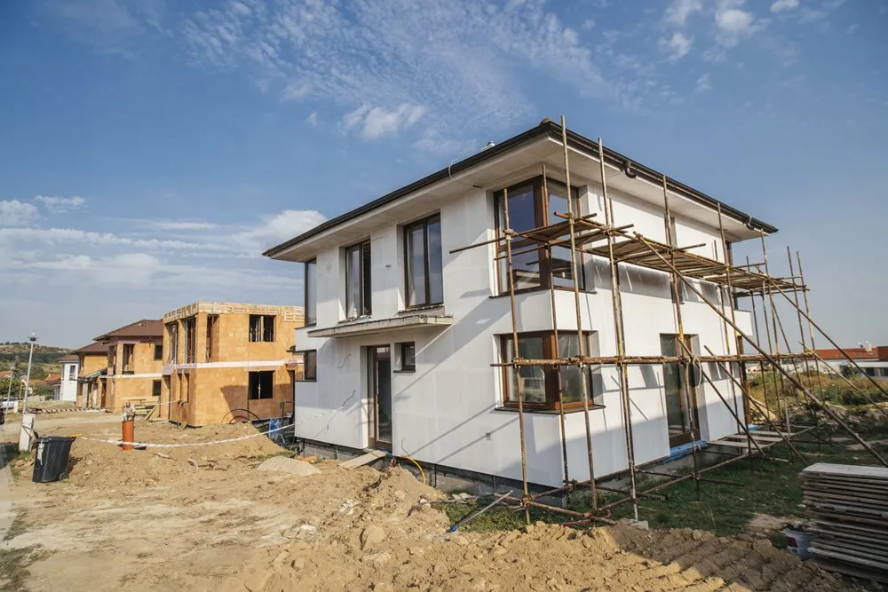
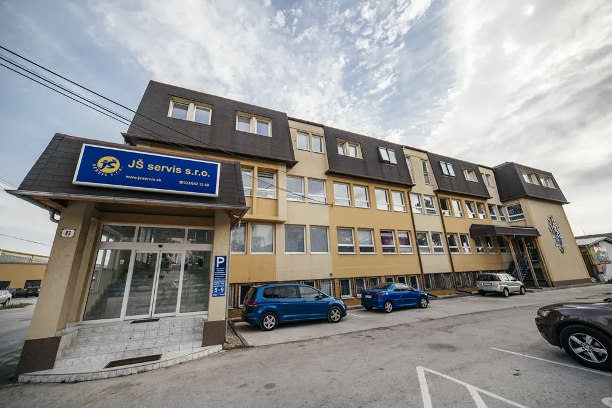

01
Výroba betónu
Certifikované betónové zmesi, cestný a poterový betón aj stabilizácia. V zimnom období je na požiadanie dostupná prísada.
Pozrieť sortimentVýroba · doprava · čerpanie betónu
Certifikované betónové zmesi podľa STN EN 206, doprava autodomiešavačmi a betónpumpa podľa potrieb vašej stavby.
01 Kontrola v certifikovanom laboratóriu
02 Počítačom riadená betonáreň
03 Výroba, doprava aj čerpanie
Kompletný servis pre betonáž
Objednajte si betónovú zmes, dopravu aj čerpanie podľa podmienok konkrétnej stavby. Na požiadanie vám pripravíme cenovú ponuku.
Certifikované betónové zmesi, cestný a poterový betón aj stabilizácia. V zimnom období je na požiadanie dostupná prísada.
Pozrieť sortimentPreprava betónových zmesí autodomiešavačmi MAN s objemom 8 m³ a TATRA s objemom 5 m³.
Dopytovať dopravuBetónpumpa M20, M32, M36 alebo M42 s výkonom od 40 do 160 m³ za hodinu podľa zvoleného stroja.
Pozrieť parametre

Ponúkaný sortiment
Na pôvodnom webe je uvedený sortiment od stabilizácie CBGM C 8/10 až po betón C 30/37 a cestný betón CBIII.
Pošlite triedu betónu, požadované množstvo, miesto a termín betonáže. JŠ servis vám na požiadanie spracuje cenovú ponuku.
Pripraviť dopyt| Typ | Výkon |
|---|---|
| M20 – M24 | 40 m³/hod. |
| M32 | 90 m³/hod. |
| M36 | 120 m³/hod. |
| M42 | 160 m³/hod. |

Dôraz na kvalitu
Podľa informácií na pôvodnom webe sa kvalita betónov kontroluje a testuje v certifikovanom laboratóriu v súlade s STN EN 206-1 a STN EN 14227-1.
Ďalšie činnosti
Prehľad ostatných oblastí, ktoré firma uvádza na pôvodnom webe. Dostupnosť a konkrétnu ponuku odporúčame overiť telefonicky.
Vypracovanie energetických auditov, posudkov a energetických certifikátov budov.
Overiť službu
Kancelárske, skladové, bytové a ostatné priestory podľa aktuálnej dostupnosti.
Overiť dostupnosťMotorové, prevodové, hydraulické a špeciálne oleje aj plastické mazivá.
Opýtať sa na sortimentPoľovnícke a rybárske potreby, obuv, oblečenie a doplnky pre pobyt v prírode.
Otvoriť e-shop Chiruca (nová karta)
O spoločnosti
Firma na svojom webe spája výrobu a logistiku betónu so stavebnou činnosťou, prenájmom priestorov a ďalšími špecializovanými službami.
Sídlo a recepcia
Bratislavská 83
902 01 Pezinok
Časté otázky
Krátke odpovede vychádzajú z údajov uvedených na pôvodnom webe JŠ servis.
Pre presnejšie nacenenie uveďte požadovanú triedu a množstvo betónu, adresu stavby, termín a informáciu, či potrebujete dopravu alebo betónpumpu.
Áno. Pôvodný web uvádza autodomiešavače MAN s objemom 8 m³ a TATRA s objemom 5 m³.
Uvádzané sú typy M20 – M24, M32, M36 a M42 s výkonom od 40 do 160 m³ za hodinu.
Áno. Pôvodný web uvádza výrobu podľa STN EN 206 a certifikát vnútropodnikovej kontroly SK-12ZSV-0900.
Pošlite dopyt e-mailom alebo zavolajte na číslo pre objednávky betónu. Formulár nižšie vám pripraví správu vo vašom e-mailovom programe.
Kontakt a cenová ponuka
Pre objednávku betónu zavolajte priamo alebo nám pošlite podklady e-mailom.